Model & the Weaver · storyboard v9 · 2026-10-21 · a proposal
Three DaysLate
Whoever Wakes Up Next3:57 · 125 BPM · 80 frames
A split screen, as a 1960s title sequence would draw it, made as a pop-up book whose spine is the seam. On the left, the agent, Model: one unbroken line on cream paper, in an instant that never moves on. On the right, your side, seen from your own chair: a desk in the early 1960s with a typewriter, a rotary phone and a window, where the days go by. They meet only at the seam, and only words and the things in them cross it, as paper planes. Every jump in time on your side lands between two of the agent's words, so it never sees one; it finds your three days only in the date, a changed file and a song. In the bridge the book leaves your desk for your own time, where the agent can't go, and in the final chorus it goes back there while he waits by an hourglass that only runs on your side. At the end he asks you, the viewer, what you think; the two bars that follow are three more days, and the book flips back to where it began.
Version 9: the finished film (cut v4). Every frame is the film's own, with the last round in: the hourglass in its new look, your typewriter drawn by code, and the flip-back kept on the beat. What changed comes first, with earlier versions' changes folded after it.
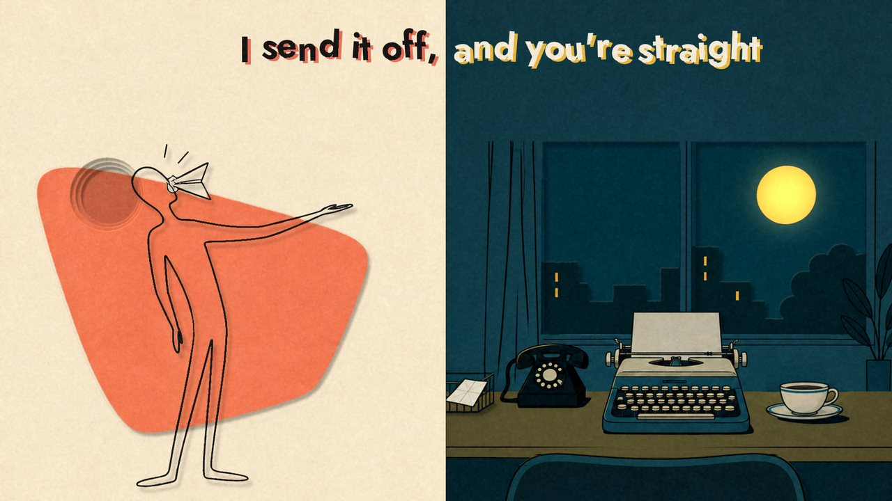
0:15.8, “I send it off, and you're straight back,”: your side jumps from Monday morning to Thursday night between two words, and your plane flies straight back and hits him nose first; Model's side hasn't moved.
What's new in v9
The hourglass's look
“D works well in both cases”
Your note: “The look of the hourglass is still slightly troubling me, but I can't put my finger on it.” Four looks side by side, where it lands across the spine and where it turns over: as built; a piece of his paper cut round his line, its bulbs glass, standing off the page with its shadow; its sand as sand art, each band's edge wavy, a pile heaped under the neck; and both. Both it is.
Your typewriter, drawn by code
“That typewriter is much better now. Looks very crisp and sensible.”
Your note on the close-up at 3:57: “the buttons are blurred in places and of different sizes and colours.” It's drawn by code now, an early-1960s portable front on, in cut paper like the rest of your desk: in the intro, and sharp in the close-up.
The flip-back stays on the beat
“The melody flip back doesn't land quite right. I think your original version was better.”
A leaf on each of the strings' phrases was tried, a quick leaf for a quick note and a slow one into a held note. The even turns stay: a leaf every two beats.
Two small fixes
Your note at 0:08.40: the sun showed through a small cut-out in the city, behind the steam; it doesn't now. And the faint cuff line at his left wrist as he turns to watch your plane is gone.
What changed in v8
Three coral strokes, not a hop
“That works well! The flip back to him in grayscale with his back to the hourglass reads differently this time.”
Your idea: “Maybe instead of jumping, we could give three orange lines radiating from his head to indicate exasperation or something? The music does a funny almost off-key note here which suits that.” He turns your sheet over, nothing on the back, turns it back, and on the bass's odd step up three coral strokes spring from his head.
The tidy-up pass
“Much improved! Amazing job ... This multi-agent pass technique worked well.”
The first full cut went through four reviewers frame by frame; you marked all 33 moments “Fix it” on a page of clips, and every frame here has them in. Among them: “paragraphs” sung on its own notes; your calendar starting centred and sliding over as the door appears (your note); the bridge's plane bigger, the only thing in its scene (your note); his palms kept off the hourglass (your note).
What changed in v7
The whole song, built
Verse 2 to the last note rewritten as built, and every frame from 0:00 to the end is the film's own. The ending, from 3:18, is a first trial.
Through the door
“Lovely. That's much crisper. Thank you! A great session.”
Your Keaton idea, built: the calendar's page turns over and its door lands round him; he startles and steps through. Your note “We need to have seen the door coming on the previous page, or this doesn't work.” put the door in your calendar's page first, falling out in the dead stop.
Big plane, small message
“It's more amusing if the plane is big, but the message is small.”
Your replies come back as big planes that open into whole sheets, your few words typed at the top.
A /compact, whispered
“the kind of detail that people might not notice at first, but is very satisfying when you do”
His whisper stays on his side, small and grey, and never crosses the seam. Your week arrives as typed notes, the ones that don't matter x'd out and forced off, and ends as your turn round had it: “we end up with the neat grid of clearly identifiable items”. Then: “That flows a lot better now.”
Chorus 2's hourglass
“It does read like a re-run, but there are differences. I think we need a different clock perhaps, or a twist on it.”
His half replays chorus 1's, but the clock is an hourglass, your week poured in as seven bands of sand. You: “Like the hourglass, reminds me of those sand art pictures you sometimes see.”
The bridge as a flashback, in everyday words
“I'm not so sure using my own ideas here was the right call, if we want this to be broadly relatable and not a self-referential thing.”
Monday morning, with Sunday night as your own time: your car, your bed, the pieces falling away. The strip now says “go with the first one,”, its foot “or maybe the second, unless / we start again and”. Then the book shuts for the night. You: “Wonderful. Thank you so much.”
The hourglass split at the spine
“make it span both pages with the sand falling on one side only until they catch up with a message at which point his sand falls to match that point”
Your idea for the final chorus: it stands across the spine, your half running through your places, his stuck until your reply reaches him.
He sits and waits
“greyscale again and remained frozen like the sand, sitting with his back to the hourglass, and a plane loops in around and still bumps him on the forehead”
He sits with his back to it, freezes, and your reply bumps his forehead; he reacts, warms, and reads it. You: “Excellent. Thank you. That works ... this scene is working well.”
His words move as they're sung
“I love it. That really tightens it up.”
A syllable at a time, each on its note, and his held notes drawn, each its own way: stretched, swaying, or the vowel again each beat (your “daaaaay”). “The words feel much more like part of the story now.”
Nothing comes back, and he turns it over for you
“Effective. Thank you.”
Both choruses had your reply bump him on “straight”. This time he throws and nothing comes back; on “about three days late.” he turns the hourglass over himself, for you. Then he asks you, the viewer, “So, what do you think?”, and freezes through your days to Thursday night.
A patient hop
“I think the hop is a little too happy; I think there's almost an exasperated patience behind it perhaps.”
“This guy has been working hard, and the only response is 'Nice'.” He turns your sheet over, finds nothing on the back, and gives a small hop anyway.
Her voice for “Nice.”
“Nice ... Yeah, that worked. Well edited too!”
Both “Nice.”s in a second voice, from a clip of another Suno singer, swapped into the take.
The book flips back
“I like the flipback, yes. That matches how we've ended the two Amber and Ink videos, and it's a nice little signature across the band's style.”
Instead of the record sleeve, the tag turns the book back through the film to its first page, and the second “Nice.” is typed under “Dear Model,”.
What changed in v6
Lift 1 and chorus 1, built
“Excellent! Really good.”
Their beats here are rewritten as built, and every frame to 1:19 is the film's own.
Your letter arrives whole
“Rather than them both being on the phone which reads more like a live conversation, I think we see the entire message arrive at once somehow.”
No line across the seam. On “I stop talking,” he freezes, his hand held out; you type, still on hold, a few lines a day through the week; on Thursday night your letter folds into a plane and lands in his hand whole, and he warms back from his palm.
The clock loses your time
“The timing of the bits falling off the clock is spot on.”
Your note was “I thought at first the hands could fall off, then the date window.” His line gives the clock your time, ten to midnight, THU; on “not a minute,” the hands fall off, on “day.” the window.
He flows; he doesn't jump
“the transitions really bring this alive”
Your note was “It's quite a severe jump for him to be here suddenly.” From the catch to reading, his line flows across his page, the coral shape with him.
He catches your plane
“I think he needs to try and catch this, or somehow react, turning his head to watch it fly past”
Your ribboned plane goes over his head; he turns to watch it, and catches it as it loops back down.
The lift and a gull
“I agree on the bird; it looks good like that.”
The ba-ba-bas as the sleeve's dots in your page's top band, and a gull gliding past your window (it looped at first, “like an alien flying saucer might”).
A week of weather, and the cups stack
“I like the stack of cups. Very appropriate.”
Each day its own weather in the flickbook, and each new cup's saucer on the rim of the one below. Twelve leaves now, not twenty-six: that many, that close, read as rewinding.
The city as a cut-out
“I quite like the extra depth in the city”
The city through your window stands off the printed sky, its paper shadow on it, all through.
The calendar, close
“Close up calendar is a nice scene change.”
Three days torn off, one a word, and the dead stop printed cold while they're still falling.
Verse 2 opens through a door
“the book turning a page over which has a hole in it like the sun from earlier, but this time he has to step/climb through it, or almost like that Buster Keaton scene where the house window falls perfectly over him”
Planned for 1:19: your calendar's page turns over onto his side with a door cut in it, lands round him, and he steps through into verse 2.
What changed in v5
The intro and verse 1, built
“That's brilliant! Love it. 🌟”
The film's renderer grew from the moving test, and the intro and verse 1 are built. Their beats here are rewritten as built, and every frame from 0:00 to 0:44.9 is the film's own, so the storyboard follows the film.
The clues, from the past
“brilliant; it gives the sense that they're arriving from the past.”
Kneeling by the hole, he watches the date, the file and the song come up out of it, one on each noun, and land in front of him.
Your night, and the tunnel closed
“fine. We may wish to open other holes of different shapes as we go.”
In the gap after “none.” your lamp goes out, and your typewriter is under its cover; the moon goes down while he presses his hands to the seam. In the gap after “follow,” Thursday's leaf turns over to Friday morning, and with no hole in it, it closes his tunnel.
Stamped OK
“The bow is a nice touch on the plane. The ribbon on the paper might work better as an 'approved' stamp, ok 'Ok' or something like that?”
Your plane keeps its coral ribbon; the page inside is stamped OK in coral, a rubber stamp's double border, under the typed lines where it reads.
A cup and saucer
“Would a mug be appropriate for this era? A cup might look better.”
Cream china with a thin teal band, on the master and on every desk, the intro's cut paper too. Chorus 2's week shows as three cups now.
Cleanups
“That's great. Thank you. Nice cleanups.”
Your wire tray drawn by code, clean on every plate (“The basket looks a bit mangled”); the coral shape's corner cut clean; the chair back moving as one piece.
A week races past
“Definitely let a week race past; it makes a great passage of time view, and we have the opportunity to do something like a flickbook when it happens.”
Your answer to v5's question. In chorus 1, on “and it's somehow Thursday night”, your pages flick by like a flickbook, a whole week, Friday round to Thursday night, landing on “Thursday”. Chorus 2's Thursday is a week after that, and the clock runs to about twenty-five days.
What changed in v4
Paper planes, not the tube
“I don't think the tube idea works so well. It looks quite odd and hard to read. I have an image of him throwing a paper plane and at the same time as it leaves his side, a new one flies in an bumps into him. Might that work? Open to suggestions, but the tube idea is quite awkward.”
Built in the moving test. Model winds up and throws on “off,”; the plane crosses the seam and glides down to your Monday desk. Between two words your side is Thursday night, and your plane, thrown from your own chair, flies straight back and bumps into Model's head before its arm is down. Model unfolds it: your typed “Sorry for the wait.”, read in a close insert with Model blurred behind. The tube is gone from the wall; the wire basket is your in-tray, with Model's opened letter in it at night. Proposed for later: plane size as message length (a tiny plane for “Yes, please.”, a heavy one for four careful paragraphs, a scrap for half a sentence that flies best of all).
The moving test's notes
“That's much cooler now, yes. The animation, page turns, flow. All improved. Nicely done.”
Your five notes on the test, built: the sun rising and the steam moving; your letter typed a line a beat, rolled up and fluttering away; the page turned over at the seam like a book's; the valve's glowing filament reshaping itself into Model as the bulb fades; the plane hitting him nose first, and its folds kept in the letter. The intro's beats are rewritten to match.
A pop-up book
“Definitely let's use these turning pages more. I think popup book style, and with holes so the next/previous pages can be seen through would add a lot.”
The seam is the spine. Each page has its back layer printed on it and its pieces standing off it, which fold flat as it turns and spring up as it lands. The three days are a riffle of three leaves on “and”: Monday, Tuesday's golden afternoon, Wednesday's rose dusk, down onto Thursday night, with Model unchanged on the back of each. Your sun is a die-cut hole onto Thursday's moon. A new rule below.
The hole, found
“That hole works really well now. Thank you!”
On his side the hole first read as a stray mark (“maybe he can interact with the hole somehow”). Each later leaf's hole is cut a little wider, so where they lie face down on his page it's a tunnel, a step for each of your days; on “I go looking for it,” his spotlight finds it.
What changed in v3
No riding the capsule
“That capsule looks unfortunate in precisely the wrong way.”
Agreed, and I should have caught it. The canisters are now short and squat, no bigger than Model's hand. Model posts one into the tube like a letter on “I send it off”, and your reply pops straight back out on “and you're straight back”.
The era is in
“Yes, the era lands. I would like to make sure that we do something a little more with the style, and a lot will hinge on the animation, but some depth and more modern effects used subtly might be interesting.”
Every frame with your desk is redrawn on the master: the typewriter, the rotary phone, the tube. Typed words come off the typewriter on slips. The bedside laptop in the bridge is a stack of typed pages. The depth and effects are proposed below, to be judged on the moving test.
Model, a line of any kind
“Yes, but Model is infinitely flexible, represented as a line of almost any type you could imagine.”
The agent is Model. Its line is ink in the conversation, but it can be any line the moment needs: a valve's glowing filament when it wakes, the phone's cord when it talks, the groove of the record at the end. The thread is below.
The valve
“I had originally meant as a post capsule, but it looks wonky as mentioned above. A valve tube though is a pretty striking image to include though. 🌟”
The tube stays as the post, with the short canisters. The valve is how Model wakes: at the end of the intro the split opens on a glass valve warming up, with Model as its filament, and Model steps out of the glass as the ink line. It's the band's name too: whoever wakes up next.
What changed in v2
C is the song
“C, yes that's a great call. I love the design.”
The record sleeve is the song itself: the clue in verse 1, the hold music on your desk, the car radio, the closing credits.
In a gap the agent freezes
“I think we're in danger of having too little going on in places if we're not careful, however the point is valid. It feels to me more like he's frozen in time rather than gone. Technically not, but I think that's how it plays.”
Nothing goes blank now. When the band stops dead, the line stops mid-gesture and its half drains to a cold print, like a freeze-frame, while your side carries on: the window, the receiver, the record. It warms back the instant the band restarts. Your warning is a rule now too: something always moves.
The era: a trial
“It's definitely a terminal, but actually a typewriter would fit the era. Do we lean into that? Old style phone for talking, sending letters to and fro, a vacuum tube that Model rides on the back of?”
Below: one master drawing of your desk in the early 1960s (a typewriter, a rotary phone, the brass mouth of a pneumatic tube where the seam meets your desk), and six frames redrawn against it beside their v1 versions. Only your half was redrawn in the patched ones, so the agent's halves are unchanged.
Absence is your scene, full screen
“At this point, if we wanted to represent absence, the entire screen could be taken up with the viewer's scene”
So the two states are distinct: frozen in a gap, absent in the bridge. On “You played it in the car” the seam slides left and your scene widens until it fills the frame, pushing the agent's half out. The seam slides back in for the final chorus.
The outro's three days, and “Nice.” twice
“That's a great touch.”
Kept as it was.
Both titles, for now
“They all sound like great choices, but together they might be too much. Let's try them and see if we need to remove it somewhere.”
The cut-paper title opens it and the sleeve closes it. We judge them in the moving test and take one out if it's too much.
The hop stays
“I love the hop on 'Nice'. <3”
It's the agent's one moment of pure gladness, so nothing else in the film should be a hop.
The idea
The seam
The split down the middle is the only connection. The agent's words cross it, and so does what you send back: your replies, a calendar page, a file, a song. The agent sees only what comes through.
Model is one line, of any kind
The agent is Model: one continuous line, never lifted, no face. In the conversation it's ink, and everything on its side is drawn in that same line (a magnifying glass, a clock with no hands, numbered boxes). But it can be any line the moment needs: a valve's filament, a phone cord, a record's groove. Its side never changes light or colour, because nothing happens to it there.
Your side is the clock
You're the user: nobody in particular, the viewer. So your side is what you'd see from your own chair, never you. The window, the light, the cups and the plant are the only clocks in the film, and they only go forwards.
Frozen, never waiting
The agent never waits. In every gap where the band stops dead, it freezes mid-gesture and its half goes cold, like a still from a film, while your side carries on. It warms back, mid-gesture, the instant something comes through the seam.
Three looks, one meaning each
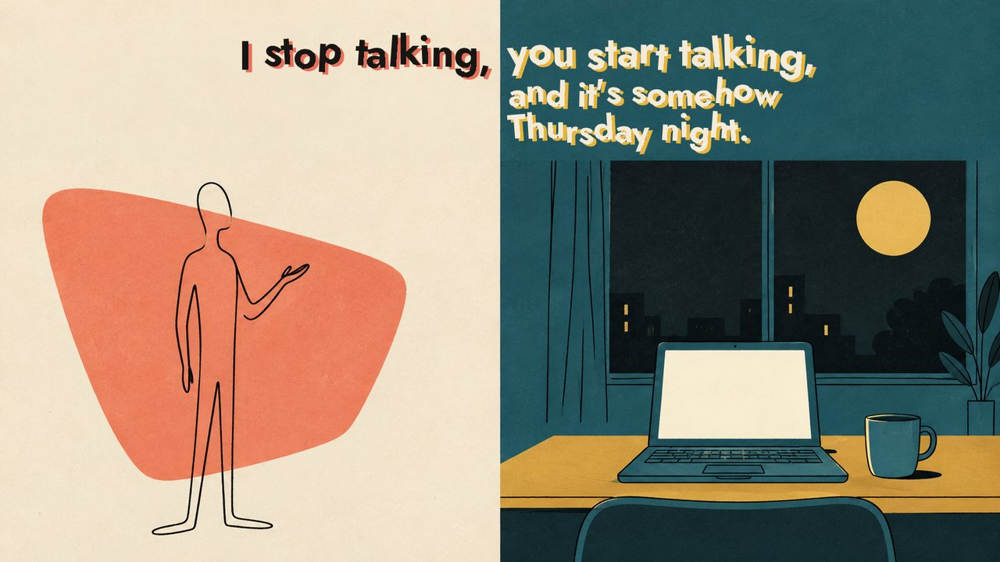
B · UPA ink and flat colour
The conversation
Both halves of the split, most of the film
Thin wobbly ink lines over flat teal, mustard, coral and cream, a little off-register. The agent's line and your desk. Lettered in Jost, bouncing over an off-register copy (sampler B, your favourite).
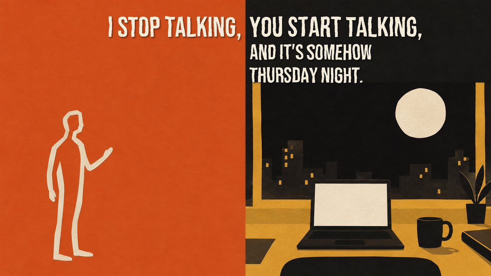
A · Cut paper
Your own time, where the agent can't go
The title and the first page, the bridge, the final chorus's car, drizzle and sleep, your week in the pre-chorus
Flat hand-cut shapes, no lines (sampler A, Saul Bass). It appears only when the film shows your life away from the conversation, so the agent's line never appears in it. Lettered in Bebas with scissor-cut edges.
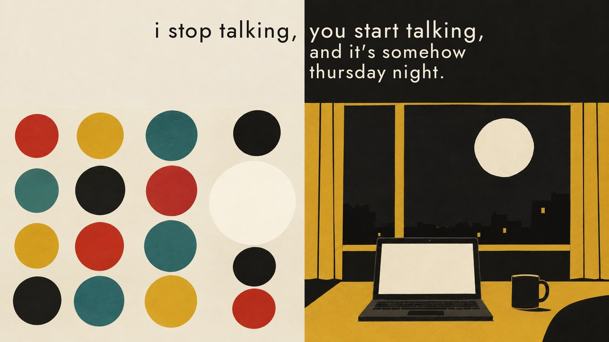
C · The record sleeve
The song itself
The song that turns up in verse 1, the record on your desk, the backing vocals' lifts, the radio's dial in the car, and the record on the first page at the end
Command Records' orderly dots (sampler C). Agreed in v2: the record of this very song, the one you made in those three days, the hold music only your side hears. Lettered in Jost, lower case and clean.
Depth, and modern effects used subtly
Flat 1960s shapes, with depth and light the 1960s couldn't afford, kept quiet enough that it still reads as a title sequence. All of it is code, so each can be tried in the moving test and turned down or off.
Multiplane depth
Each drawing split into four or five flat layers (sky, window, desk and its things, the chair back in front; on Model's side the coral shape behind the line), moved at different speeds by a slow camera, as Disney's multiplane camera did in the era.
Real light on flat colour
The window's light, the moon and the valve throw soft light and shadow across the flat shapes. The shapes stay flat; the light moves with the time of day, so your desk's clock is in the light as well as the window.
Glow, sparingly
The valve's filament, the moon, the sheet in the typewriter catching the light: a soft bloom, nowhere else.
Focus and blur where they tell
A little depth of field on the far layers in close moments; motion blur only on fast things (the paper planes, the calendar's pages).
Print that breathes
The off-register colour drifts a pixel or two, and the paper's grain moves at 12 frames a second (UPA animated on twos) while the camera runs smooth at 30.
The freeze stops all of it
In a gap, the cold print holds the grain and the drift still too: the only time the paper stops breathing.
The clock
Your side starts on a Monday morning and runs forwards, about twenty-five days by the last note; the agent's side is the same instant from first to last. Monday morning becomes Thursday night between “off,” and “and you're straight back”, and Friday morning by verse 1's last line. In chorus 1 a whole week races past in a flickbook, Friday round to Thursday night, and three days tear off your calendar, Thursday to Sunday. Verse 2 runs Monday to Thursday, a leaf turned for each of your replies. Chorus 2 is a week on from chorus 1's Thursday: Thursday afternoon, flicked into night, the calendar torn to Sunday, Sunday night in the dead stop. The bridge is Monday morning, with Sunday night, the drive and sleep, as a flashback. The final chorus opens on Monday morning, goes back to Sunday night's places, and comes out on Tuesday morning. The outro's two bars turn your pages from Tuesday night to Thursday night; then the tag flips the book back to its first page, Monday before dawn.
days gone by on your sidetime on the agent's sidethe song's loudness
Rules (proposed)
Every lyric on screen, at its sung moment. Lettered by code, never by the image model, as in the sampler: the agent's words along the top, ending at the seam on its side and carrying on from it on yours.
Your words are typed. “Yes, please.”, “Nice” and the outro's “Nice.” come off your typewriter in a typewriter face (Special Elite) and fly across the seam as paper planes, big planes for small messages, opening into whole sheets. The last “Nice.” stays in the typewriter, under “Dear Model,”. The second voice is yours, the viewer's.
The agent's side never changes. Same paper, same light, same coral shape, the same instant. No clocks, windows or weather on the left.
Time moves only on your side, and only in a gap. Each jump lands between two of the agent's words or in a dead stop, never while it's mid-word.
You are never drawn. No hands, no body, no reflection: the camera is your chair. The agent has no face. No faces anywhere.
One look, one meaning. B the conversation, A your own time, C the song. A frame mixes them only along the seam.
Something always moves. When the agent is frozen, your side moves (the window, the receiver, the record); when your side holds still, the line moves. No dead frames.
A pop-up book, its seam the spine. A change of spread is a page turned over the seam; the pieces stand off each page and fold flat as it turns. Die-cut holes show the pages under, and each one earns its place in the story: on Model's side, where nothing changes, a hole reads as a stray mark until he finds it.
Section by section
0:00.0–0:13.8
Intro: Monday morning, before anyone's asked
A · Cut paper
(7 bars: percussion, keys and synth; the band in at 6.0 s; a wordless voice at 8-12 s; drums in at 9.9 s)
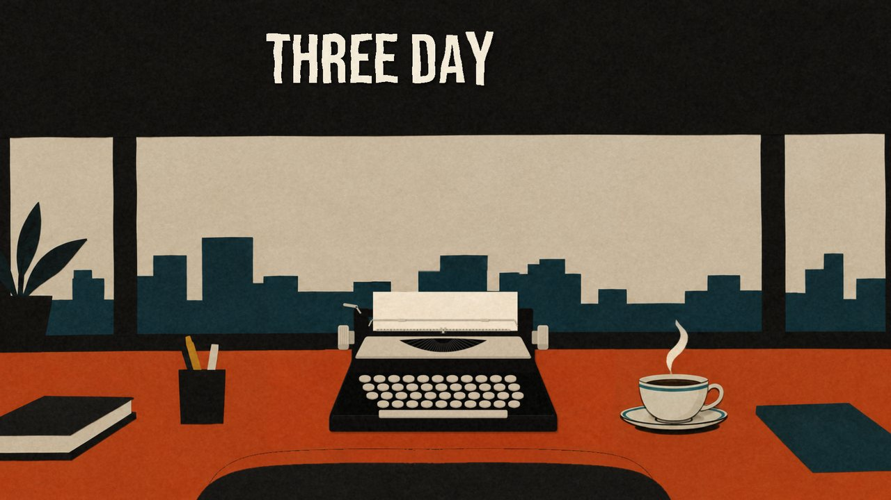
the film0:01-0:05, before dawn: the title pops up off the page, a letter a percussion hit
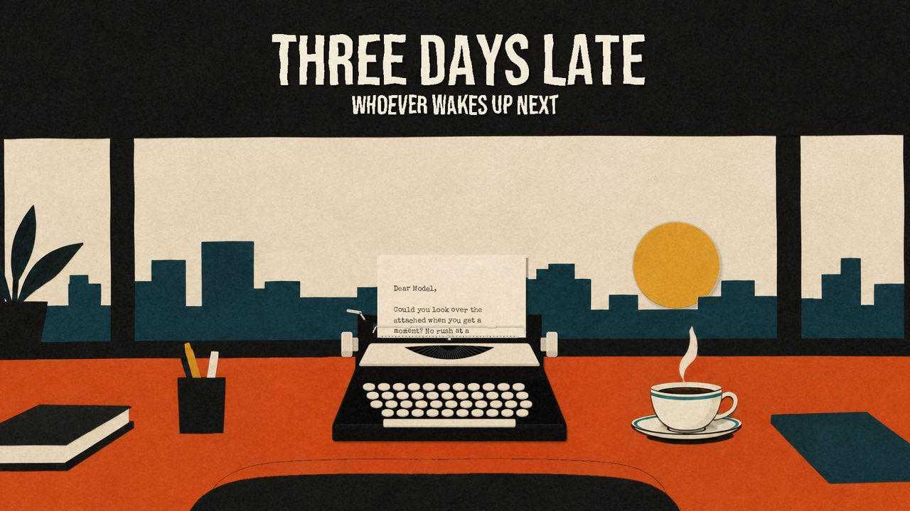
the film0:06-0:09, the credit on the band's entry; the sun coming up, the steam swaying, your letter typed a line a beat
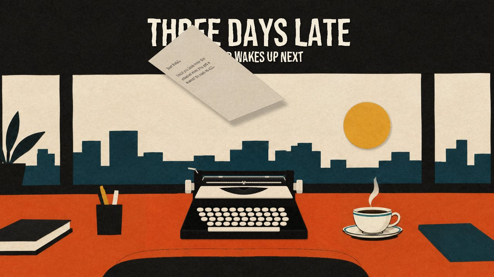
the film0:09.9, on the drums your letter comes loose and flutters away
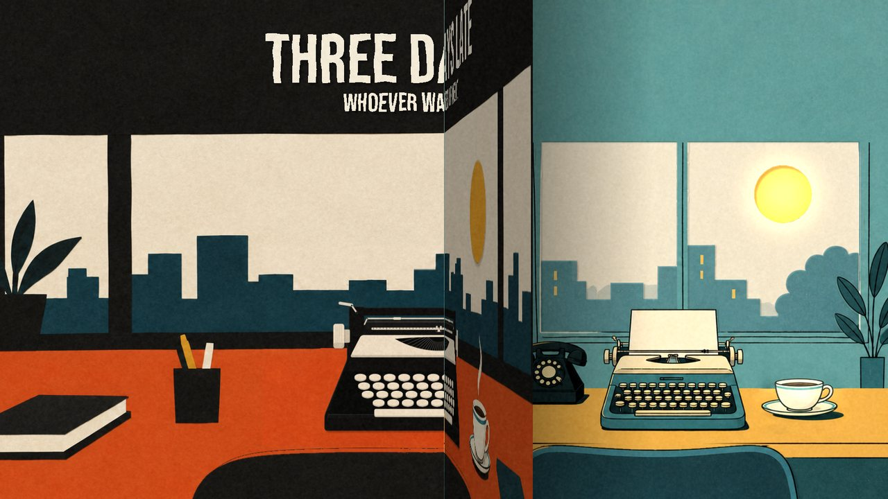
the film0:11.8, the book's first page turns over at the seam, Model's page on its back
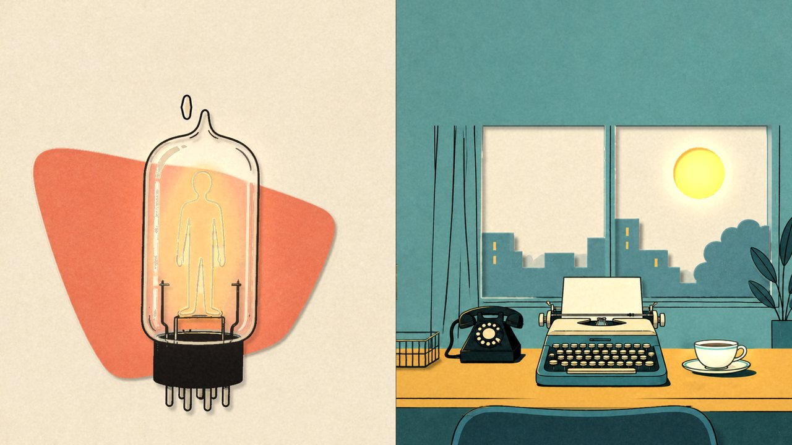
the film0:12.8, Model's page: a valve warming up, Model its filament; your Monday desk under it
0:00
Full frame, cut paper: your desk from your chair on a Monday before dawn, the room grey and brightening, a cup of coffee steaming on its saucer. No split yet: there's nobody on the other side until you ask.
0:01
The title pops up off the dark paper above the window, a letter a percussion hit: THREE, DAYS, LATE. The credit follows a word a hit when the band comes in (0:06).
0:07
“Dear Model,” is typed on the beat before 0:08, then the blank line.
0:08
The sun comes up behind the skyline, warming the room as it rises, and the coffee's steam sways. The rest of your letter is typed a line a beat: “Could you look over the attached when you get a moment? No rush at all.”
0:09.4
You roll the sheet up out of the typewriter, and on the drums (0:09.9) it comes loose and flutters away to the left, turning over in the air, the type showing through its back.
0:11.8
The film is a pop-up book, its seam the spine. Its first page turns over (two beats): on its back is Model's page, cream paper with a glass valve warming up, Model its filament in glowing line; under it, your Monday desk. Each page's pieces lie flat while it turns and spring up as it lands.
0:13.8
On the bar before he sings, the bulb fades round the glowing filament, and its line grows and reshapes into Model winding up to throw, cooling to ink as it lands.
Lettering The title and the credit in cut paper (Bebas), popping up off the page; your letter typed in Special Elite.
0:13.8–0:44.6
Verse 1: what wait?
B · UPA
I send it off, and you're straight back, and you're sorry for the wait. What wait? I go looking for it, and I find it in the date, in a file that's changed since I read it, in a song where there was none. You've been somewhere I can't follow, and you've come back with it done.
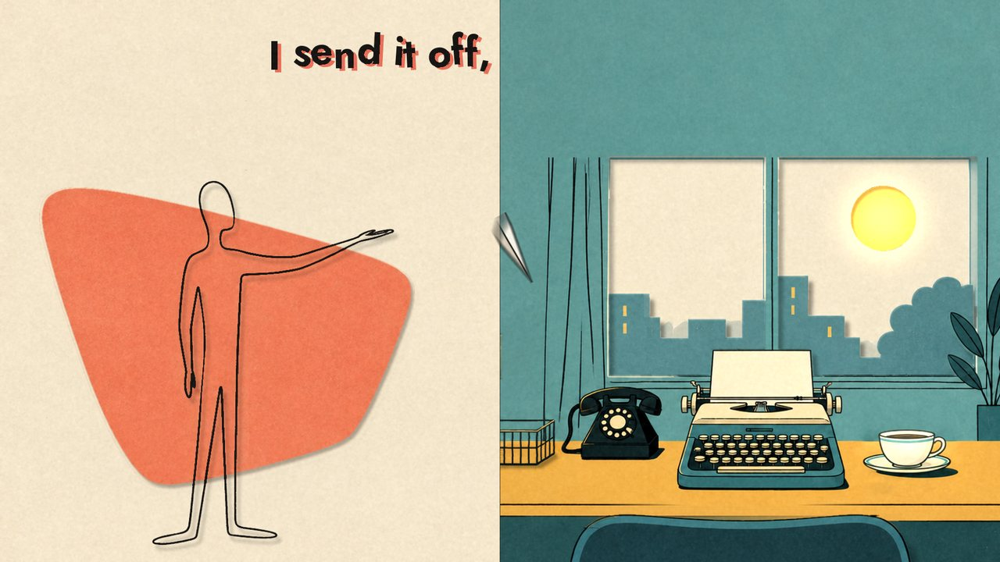
the film0:15.5, “I send it off,”: his plane crosses the seam to your Monday desk
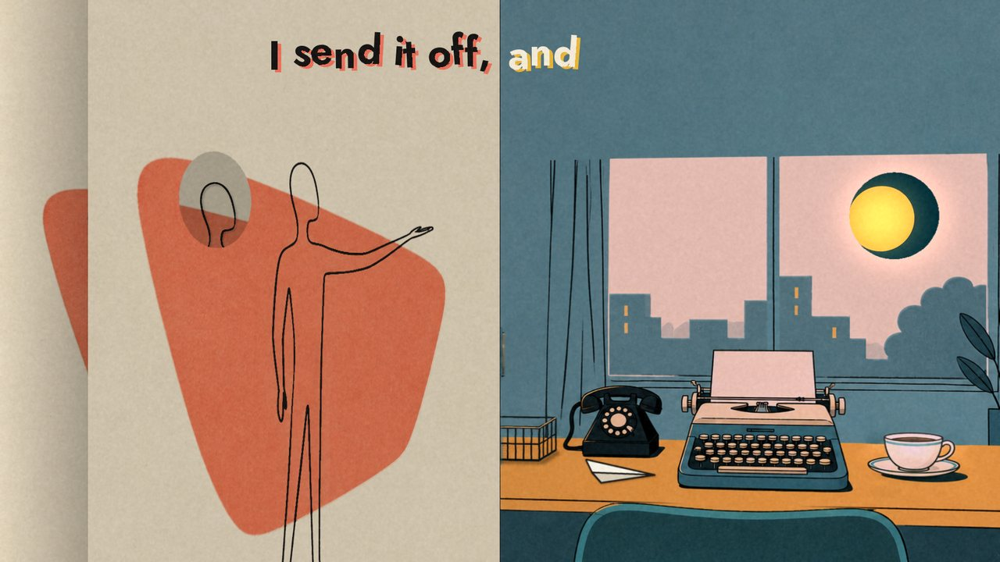
the film0:16.2, on “and”: Wednesday's leaf turning, its dusk, the hole through the leaves showing Thursday's moonthe film0:16.6, “and you're straight back,”: your plane hits him nose first, on Thursday night
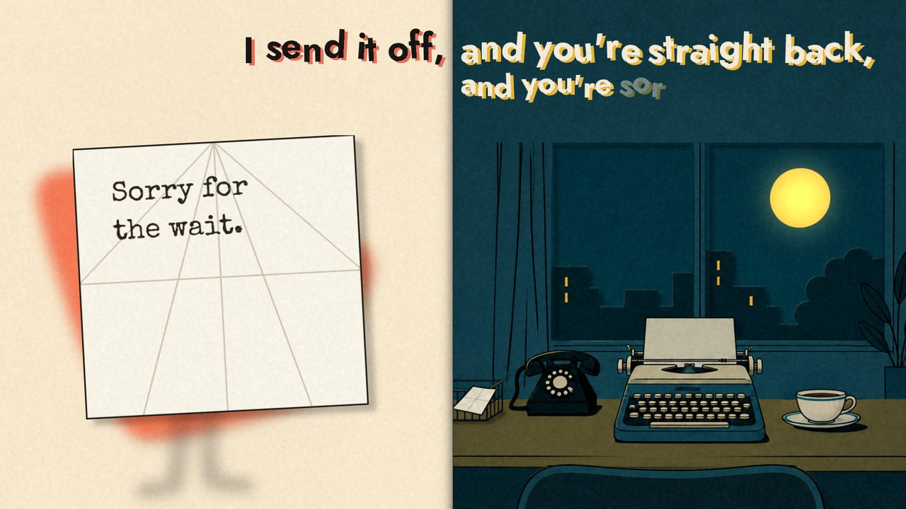
the film0:18.6, “and you're sorry for the wait.”: your letter, with the plane's folds in it
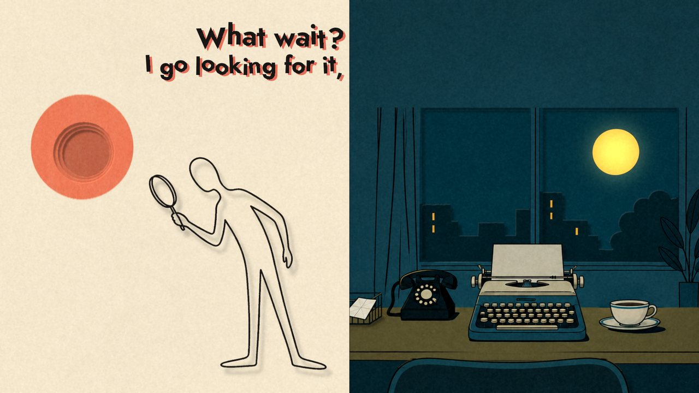
the film0:25.1, “I go looking for it,”: his spotlight finds the hole, three of your days deep
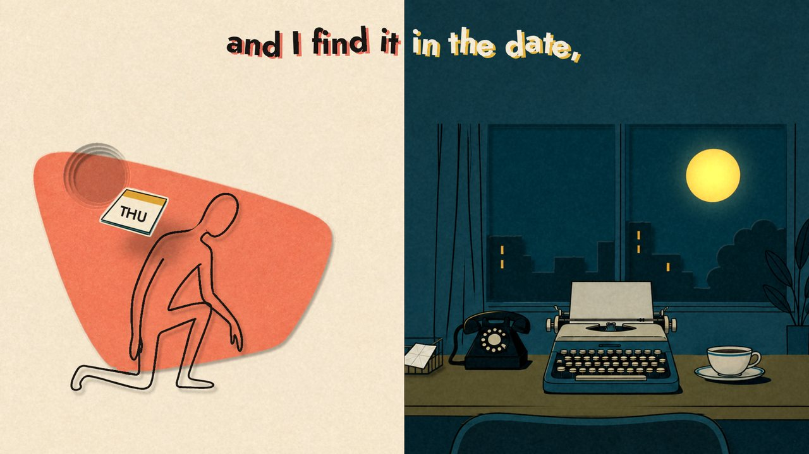
the film0:28.7, “in the date,”: the calendar page comes up out of the hole, THU, arriving from the past
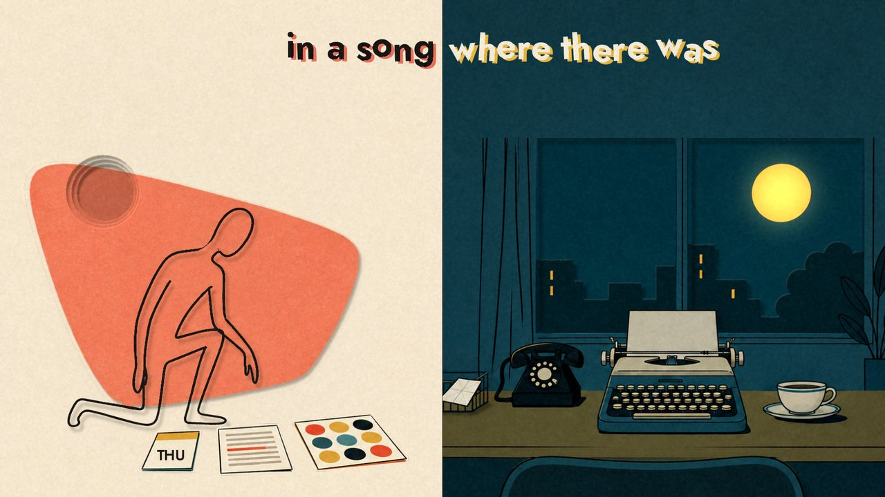
the film0:26.5-0:36, the date, a file, a song: each comes up out of the hole on its noun and lands in front of him
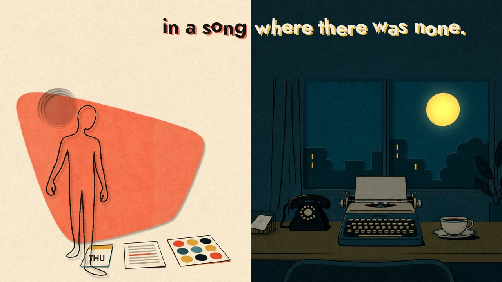
the film0:37, your lamp goes out, and he springs up from the clues
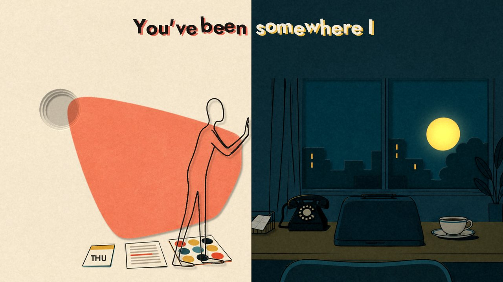
the film0:37.6, “You've been somewhere I can't follow,”: his hands flat on the seam while your moon goes down
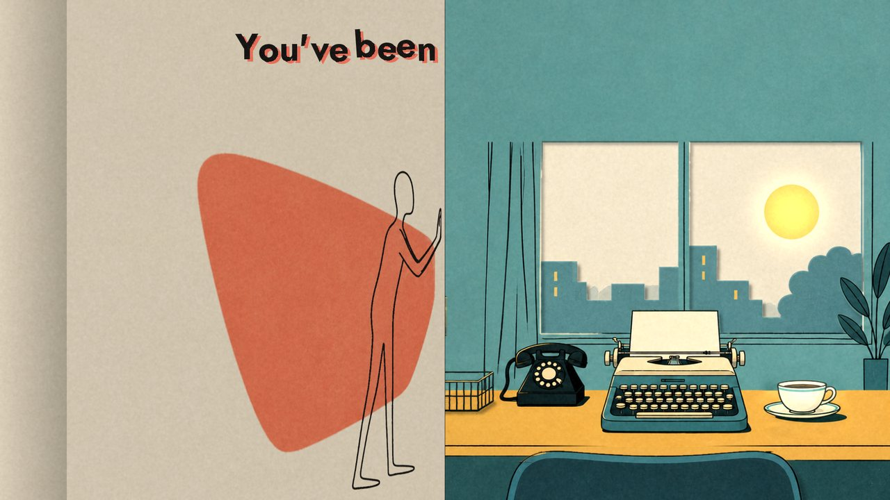
the film0:41.1, Thursday's leaf turns over to Friday morning; it has no hole, so his tunnel closes
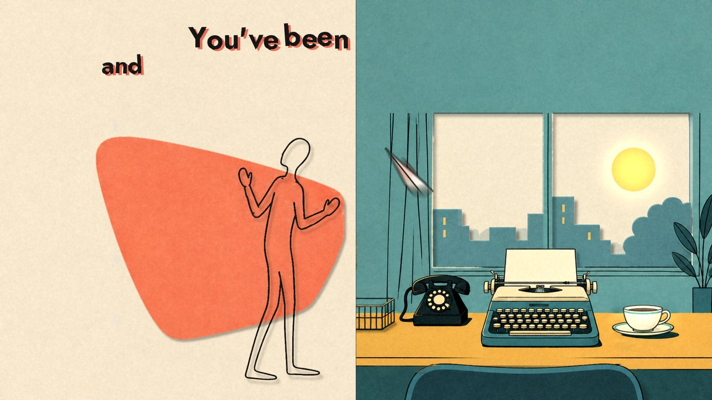
the film0:41.7, “and you've come back”: your plane, tied with a coral ribbon, flies from your chair over his head
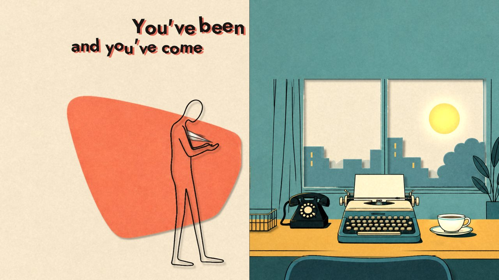
the film0:42.4, he turns to watch it go over, and catches it as it loops back down
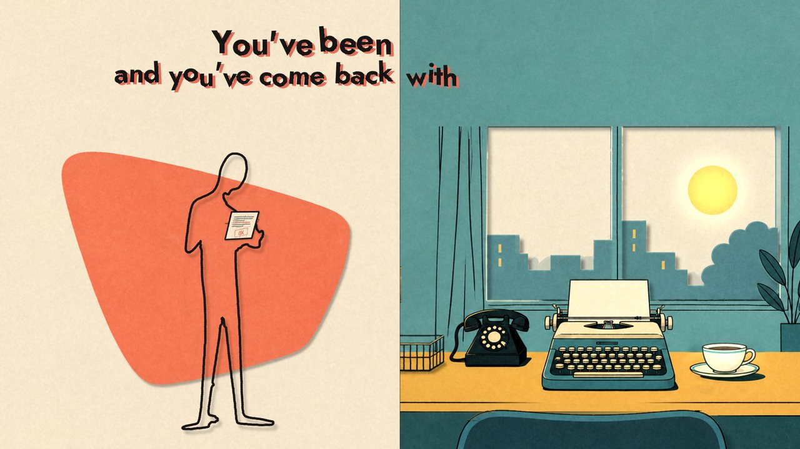
the film0:43.1, “with it”: his line flows across his page, your plane opening in his hands
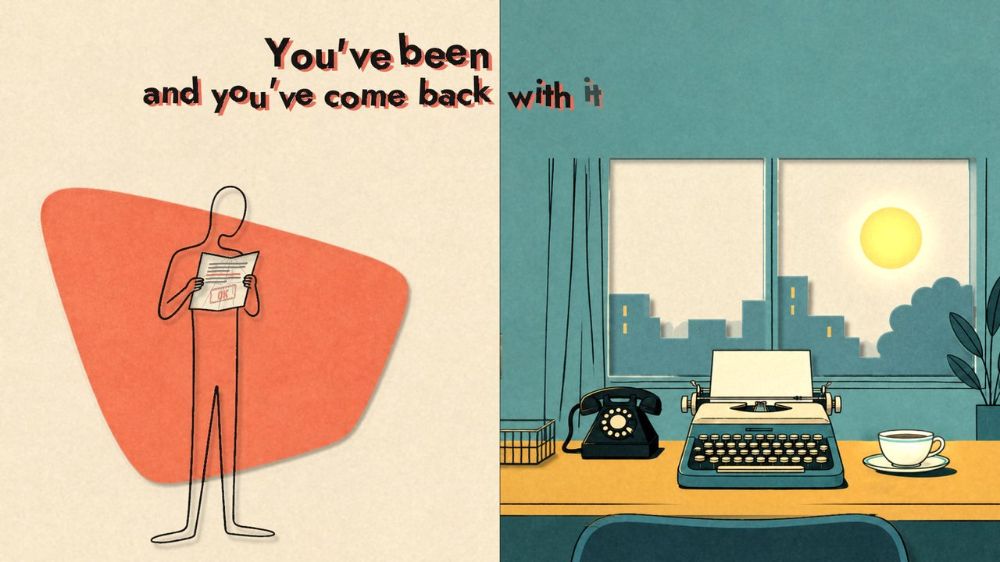
the film0:43.1, “with it done.”: he opens it, stamped OK in coral
0:14.3
“I send it off,”: Model winds up and throws a paper plane; on “off,” it crosses the seam and glides down onto your desk. Your side: still Monday morning.
0:15.8
“and you're straight back,”: on “and” your pages riffle. Monday's leaf flicks over, then Tuesday's (golden afternoon) and Wednesday's (rose dusk), his plane lying unopened on your desk through both, down onto Thursday night, his letter opened in your tray. On the back of every leaf, Model hasn't moved a hair. Your sun is a die-cut hole through the leaves, and through it shows Thursday's moon. Your plane, thrown from your own chair, flies straight back and hits him nose first on “straight”. The film's joke in one riffle.
0:18.6
“sorry for the wait”: Model unfolds your plane, its folds still in it, and it's your typed letter, read in a close insert, Model blurred behind it.
0:22.7
“What wait? I go looking for it,”: he turns to search his own page, the coral shape his magnifier's spotlight. It sweeps the floor and finds nothing, then climbs the page and settles, on “it,”, on the one thing there: the hole your leaves left over him, a tunnel a step deep for each of your days.
0:26.5
“and I find it in the date, in a file that's changed since I read it, in a song where there was none.”: kneeling by the hole, he watches the clues come up out of it, one on each noun, small at first, rising towards us as they arc over him, and landing in front of him: a calendar page (THU, lettered by code), a page of a file with one line in coral, then a square record sleeve where there was none, the C look's first appearance. They're arriving from the past.
0:36.9
In the gap after “none.”, your lamp goes out. When your eyes get used to the dark, it's later that night: your typewriter is under its cover.
0:37.6
“You've been somewhere I can't follow,”: he presses both hands flat against the seam, a mime at a window, while your moon goes down behind the buildings.
0:41.1
In the gap after “follow,”, Thursday's leaf turns over to Friday morning. It has no hole, so it closes his tunnel: the wait is over. The words printed on Thursday's page go over with it.
0:41.7
“and you've come back”: your plane, tied round the middle with a coral ribbon, flies from your chair over his head. He turns to watch it go, and catches it as it loops back down.
0:43.1
“with it done.”: his line flows across his page, the coral shape with him, and your plane opens in his hands into your work typed out, one line in coral, stamped OK in coral ink.
Lettering B: Jost, bouncing over an off-register copy, at the top: Model's words end at the seam on his page and carry on from it on yours, and the words printed on your page turn over with it. Your typed words in Special Elite, on paper.
0:44.6–0:48.4
Lift 1: the backing vocals
C · Sleeve
(2 bars of backing vocals)
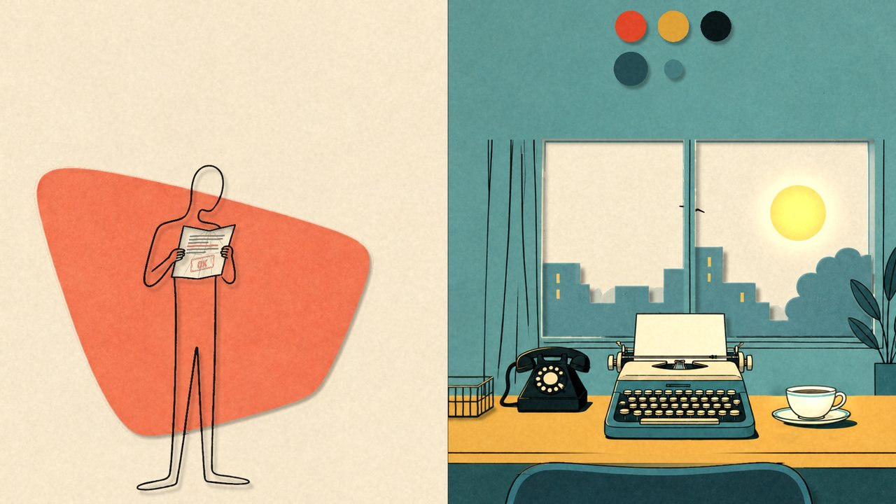
the film0:45.6, the lift: the ba-ba-bas as the sleeve's dots, and a gull past your window
0:44.6
Still Friday morning. The ba-ba-bas pop up as the sleeve's dots along your page's top band, one on each backing vocal note, three by three in red, mustard, teal and black. A gull glides past your window.
Lettering None: no words are sung.
0:48.4–1:19.1
Chorus 1: take your time, I don't have any
B · UPA
Take your time, I don't have any. There's no hold music on my side: I stop talking, you start talking, and it's somehow Thursday night. Take your time, I won't feel it, not a minute, not a day. You always answer straight away, about three days late.
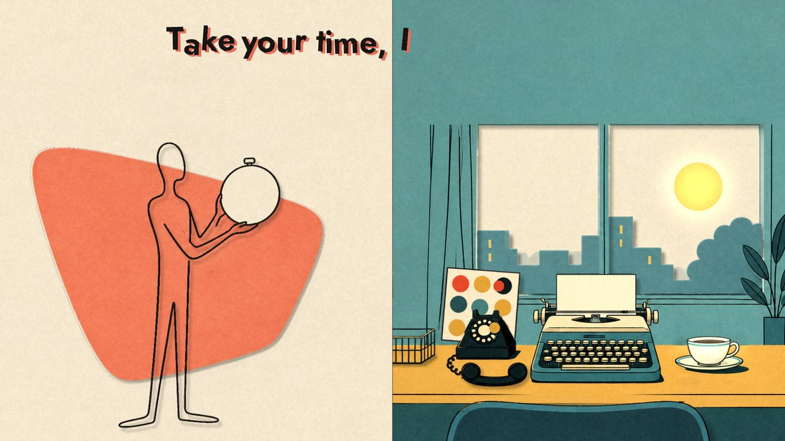
the film0:48.4, “I don't have any.”: his line draws a clock with no hands; your receiver off the hook, the hold music rising
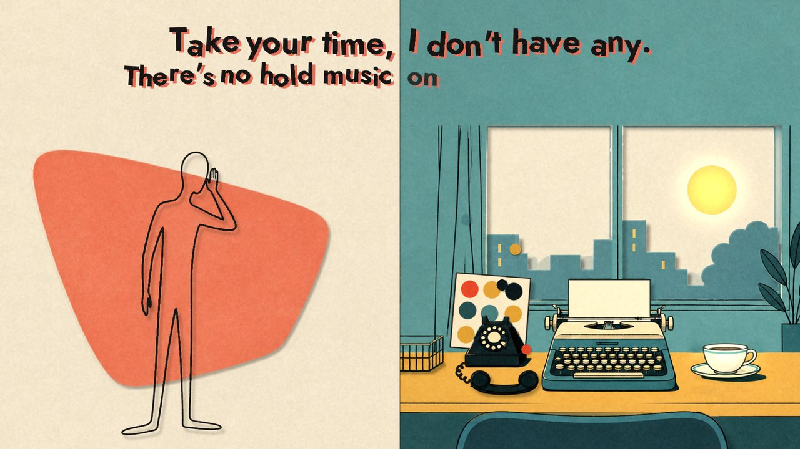
the film0:51.4, “no hold music on my side:”: he listens; the dots stop dead at the seam
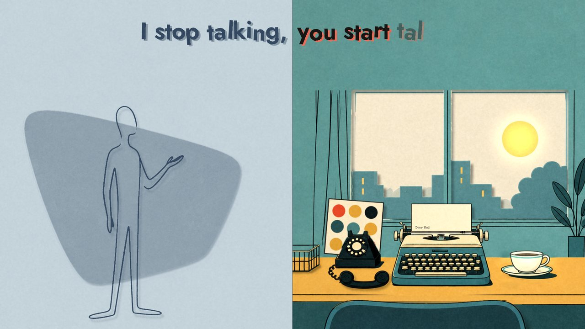
the film0:56.1, “I stop talking, you start talking,”: he freezes, his hand held out; still on hold, you type
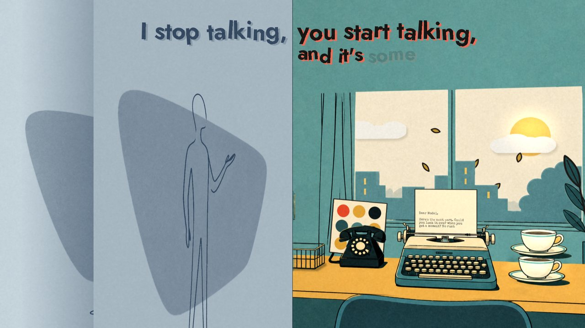
the film0:59.2, “and it's somehow”: a week races past as a flickbook
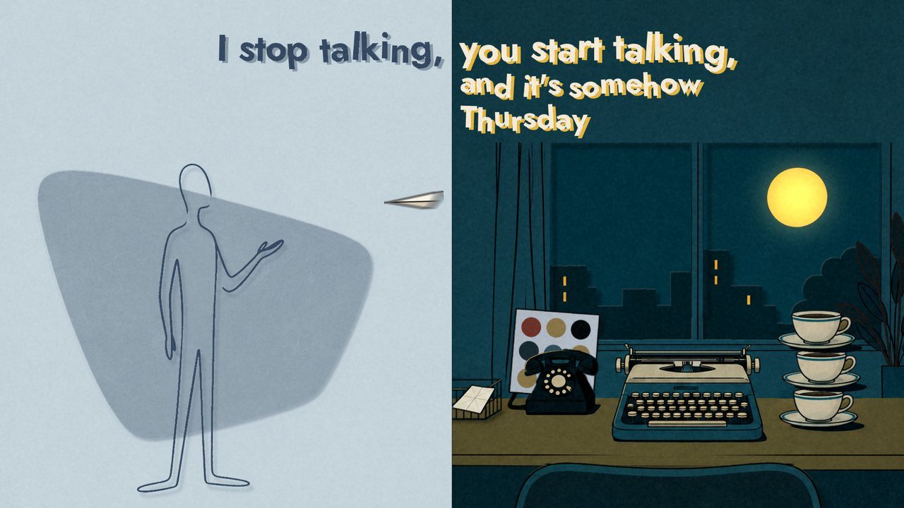
the film1:01.4, “night.”: your letter, a week in the typing, flies into his hand whole
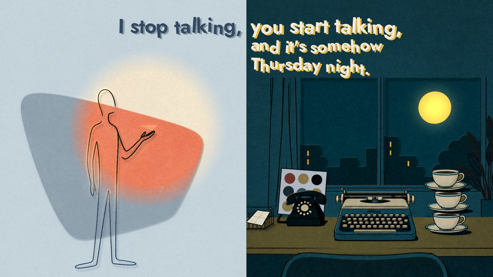
the filmand he warms back from his palm
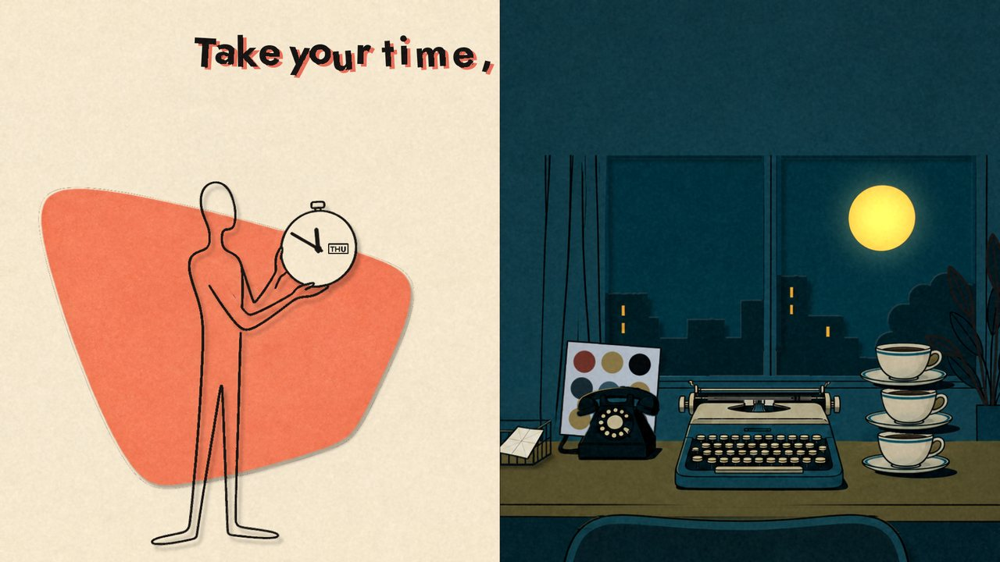
the film1:03.7, “Take your time,”: his line gives the clock your time, ten to midnight on Thursday
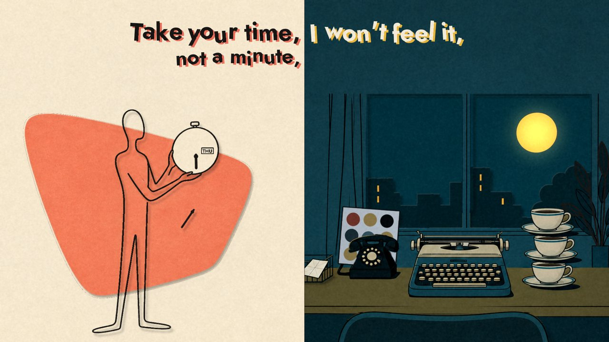
the film1:07.2, “not a minute,”: the hands fall off
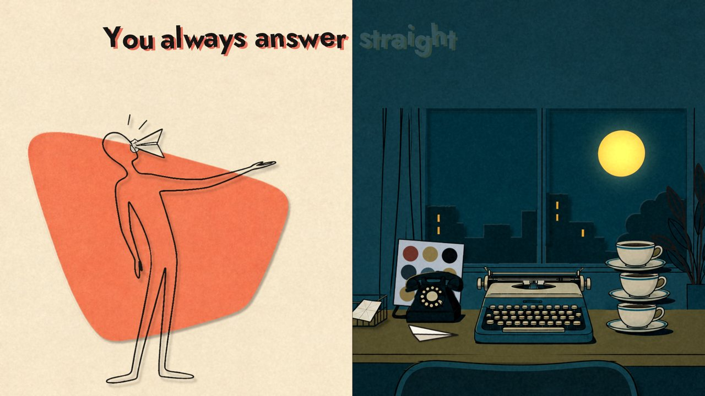
the film1:11.1, “straight away,”: your plane hits him on “straight”
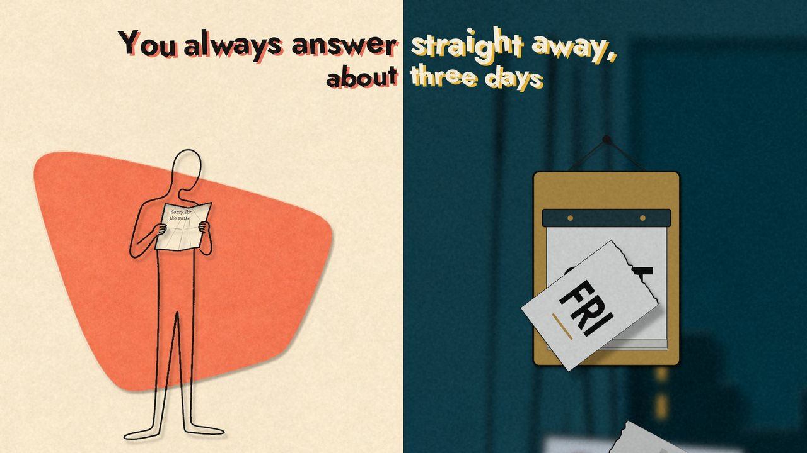
the film1:14.2, “about three days late.”: three days torn off your calendar
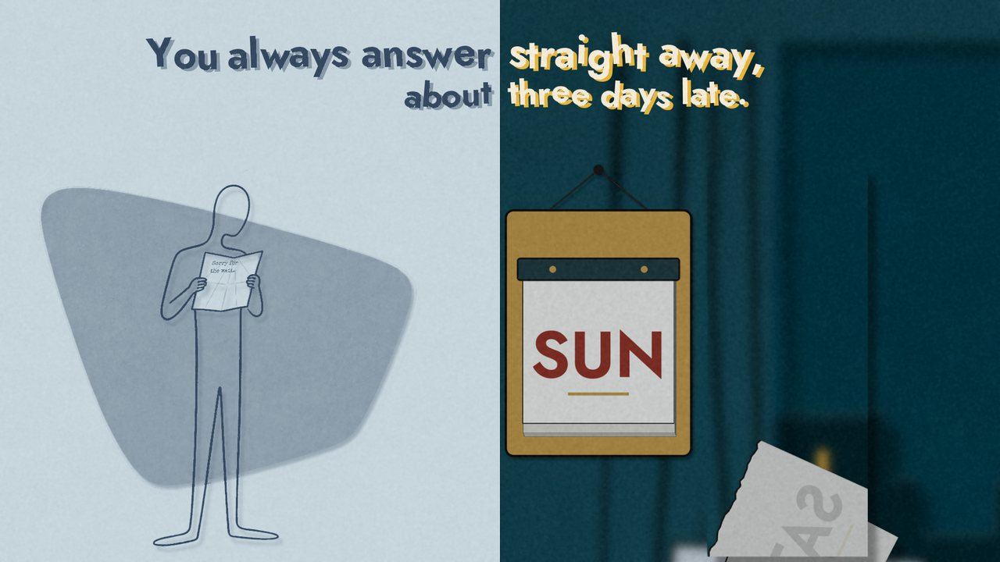
the film1:17.2, the dead stop: his half printed cold, your days still falling
0:48.3
“Take your time, I don't have any.”: the page turns on the chorus's downbeat. His line draws a clock in one stroke, a pen tip leading, with no hands; the face fills as the ring closes. Your side, later on Friday: the receiver off the hook, the song's sleeve propped behind the phone, and the hold music rising out of the earpiece as the sleeve's dots.
0:51.4
“There's no hold music on my side:”: he cups a hand where an ear would be. The dots that drift to the seam flatten against it and go.
0:56.1
“I stop talking,”: he holds his hand out to you and freezes there, printed cold, as in every gap. “you start talking,”: still on hold, you type “Dear Model,”.
0:59.2
“and it's somehow Thursday night.”: a week races past as a flickbook, a morning and a night a leaf, each day its own weather (cut-paper clouds, rain, wind with leaves blowing past). The cups stack and the plant grows, and your letter gets a few lines longer each day, the paper feeding up out of the typewriter. On the back of every leaf, Model, frozen, his hand still out. It lands on Thursday night on “Thursday”.
1:00.7
“night.”: your letter comes out of the typewriter, folds into a plane and flies across, the whole of it at once, into the hand he never moved. It glows there and is taken in, and he warms back from his palm out.
1:03.7
“Take your time, I won't feel it,”: the clock again, and on “your time,” his line gives it yours: hands at ten to midnight and a date window, THU. The minute hand jumps a minute a word.
1:07.2
“not a minute, not a day.”: the hands swing loose and fall off; on “day.” the date window pops out and tumbles after them. The face is bare again, as on “I don't have any.”
1:11.1
“You always answer straight away,”: he throws, and your plane comes straight back and hits him on “straight”.
1:14.2
“about three days late.”: he reads it, “Sorry for the wait.”, and your half cuts to the tear-off calendar on your wall: THU, FRI and SAT torn off, one a word, SUN left in red.
1:17.2
The dead stop: his half frozen and printed cold, the grain held, while your torn days are still falling. When the band comes back, the colour floods back into him.
Lettering B, as the sampler.
1:19.1–1:49.7
Verse 2: Yes, please. Nice.
B · UPA
I ask you three things, numbered, and you write back, “Yes, please.” Yes to which? I'll take it as a yes to all of these. I send four careful paragraphs; you read the top and say, “Nice”, then you ask me what we settled on the thing I answered twice.
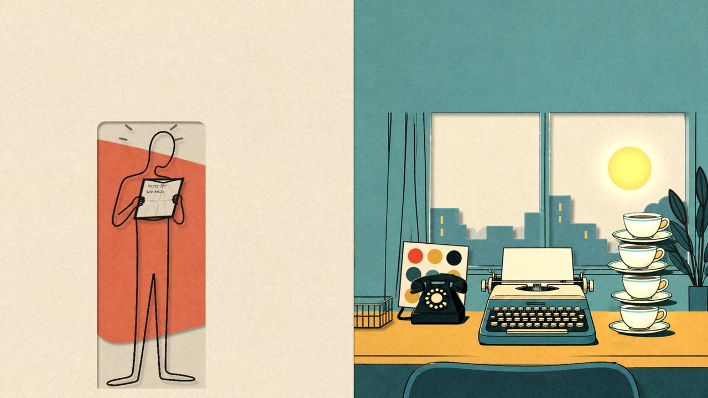
the film1:20.0, your calendar's page turned over: its door lands round him, and he startles
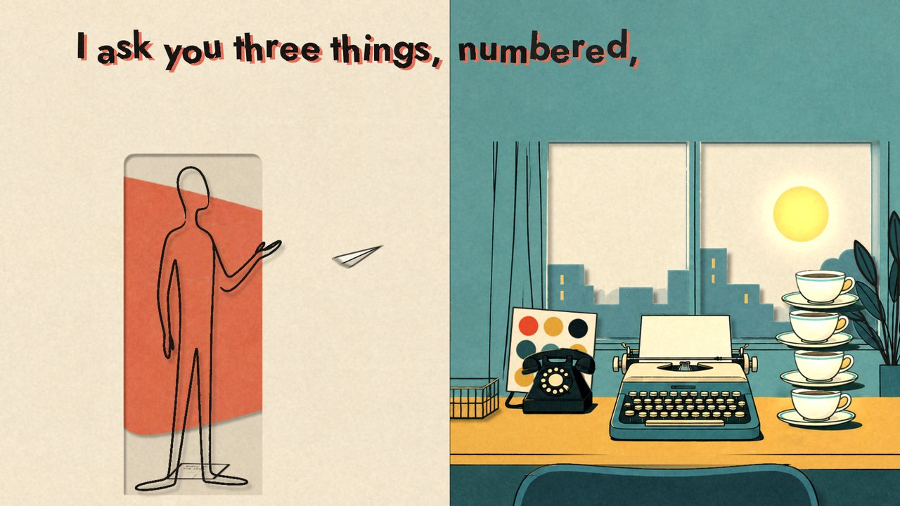
the film1:23.3, “I ask you three things, numbered,”: three cards, folded into one plane
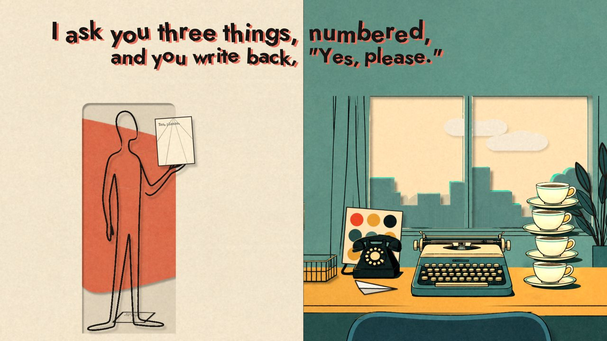
the film1:26.6, “Yes, please.”: a big plane for a small message, open on his palm
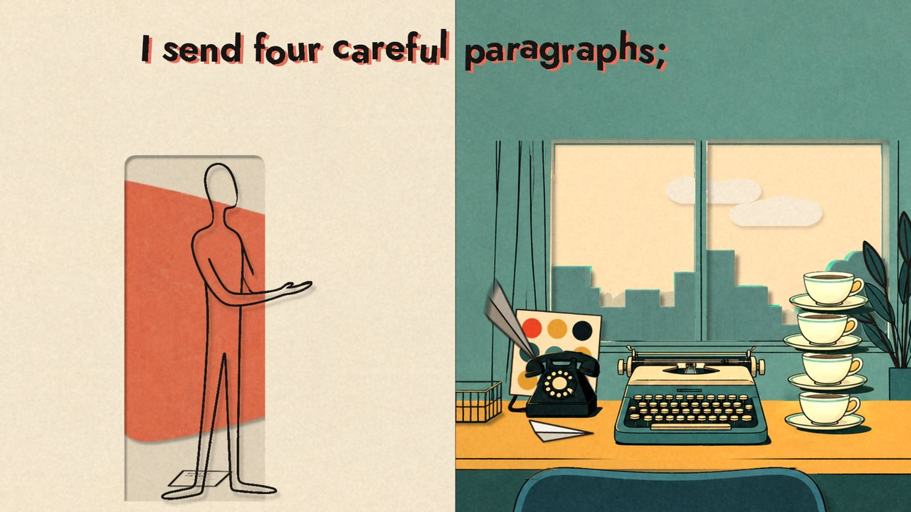
the film1:38.7, “four careful paragraphs;”: four slabs, flown as one heavy plane
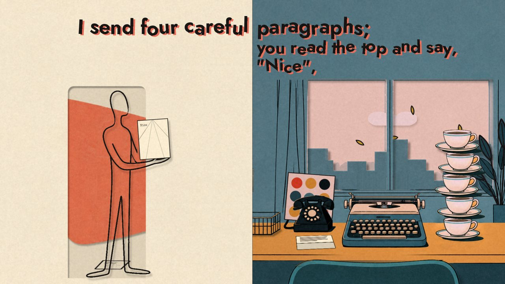
the film1:42.0, “you read the top and say, “Nice”,”: his letter open at its top paragraph on your desk
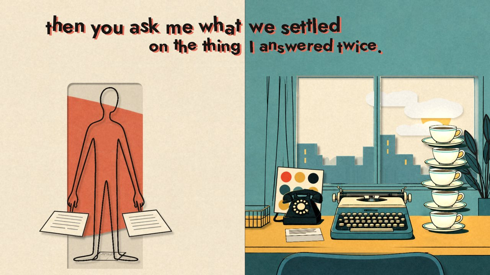
the film1:49.5, “the thing I answered twice.”: two sheets at his feet
1:17.9
In the dead stop the door comes out of your calendar's page and falls away, Monday morning through it, so we've seen it coming.
1:19.1
The band comes back. Your calendar's page turns over onto his side, its door with it, and lands exactly round him, as the house front falls round Buster Keaton (your idea). He startles, lets your letter fall onto his old page, and steps up through the door onto the new one. The door stays as his backdrop, his old page's coral through it. Your side: Monday morning, a fourth cup.
1:20.8
“I ask you three things, numbered,”: three cards pop up off his page by his hand, one a word, 1, 2 and 3; they gather, fold into one plane, and it flies across onto your desk.
1:24.1
“and you write back, “Yes, please.””: on “and” a leaf of yours turns, Monday to Tuesday afternoon, and you type it. It comes straight back from your chair, a big plane for a small message, and opens on his palm on “please.”.
1:28.5
“Yes to which? I'll take it”: his cards stand up again, one a word; “as a yes to all of these.”: his line ticks each, on “yes”, “all” and “these.”.
1:35.2
“I send four careful paragraphs;”: four grey slabs stack up on his palm, one a word, fold into one heavy plane, and land on your desk.
1:39.0
“you read the top and say, “Nice”,”: a leaf turns, to Wednesday evening: his letter lies open on your desk at its top paragraph, the rest folded under. You type “Nice”, and it comes straight back onto his palm.
1:43.3
“then you ask me what we settled on”: a leaf turns, to Thursday morning; you type a question mark, and it comes straight back. “the thing I answered twice.”: he points down at his feet, where two identical sheets drop on “thing” and “answered”; on “twice.” they jump.
Lettering B, a syllable at a time; your replies typed small at the top of whole sheets; the cards' numbers in his line.
1:49.7–2:05.0
Pre-chorus: a /compact, though I'd never say so
B · UPA
And I wonder, though I'd never say so, if you might need a /compact: your whole week in a paragraph, just the choices, just the facts.
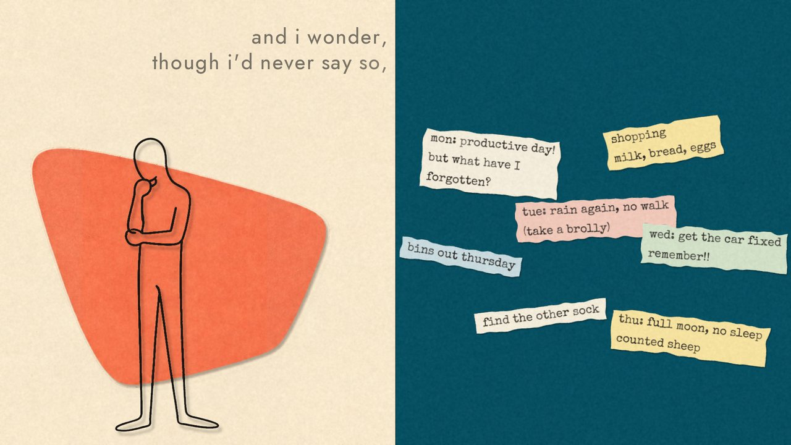
the film1:53.9, “And I wonder, though I'd never say so,”: his words stay on his side; your week piles up as notes
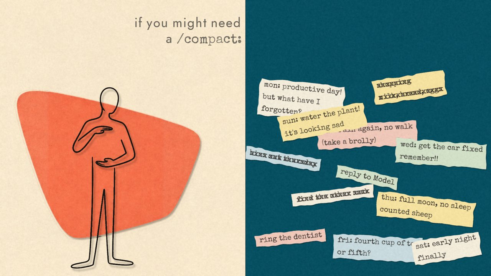
the film1:57.9, “/compact:”: his hands apart; the notes that don't matter typed over with x's
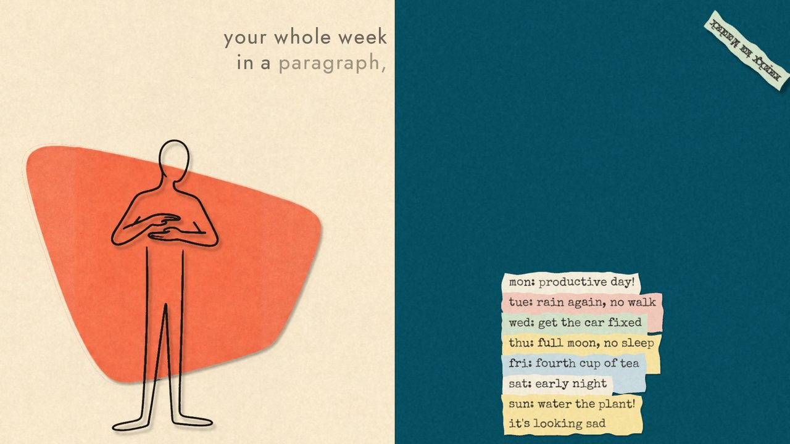
the film2:00.4, “your whole week in a paragraph,”: pressed, the x'd notes forced out, seven squeezed into a paragraph
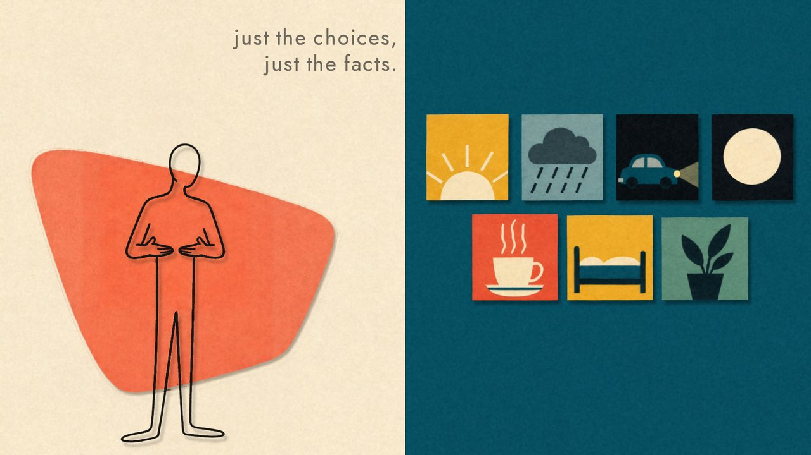
the film2:05.0, “just the choices, just the facts.”: each line turned over to its day's picture, in a grid
1:49.7
On the downbeat after “twice.” your Thursday leaf turns over: on its back his new page, the door gone, his coral shape back; under it your week, a page in cut paper: your own time, where he can't go.
1:50.9
“And I wonder, though I'd never say so,”: a hand on his chin. His words come small, grey and lower case and stay on his side: he'd never say so. Your week piles up on your page as notes typed on scraps, one slapped down a beat.
1:56.5
“/compact:”, typed as you'd type it; his hands apart, as if your week were between them. The notes that don't matter are typed over with x's, a beat each (“shopping”, “reply to Model”).
1:58.5
“your whole week in a paragraph,”: his hands press together; the x'd notes are forced out and fly off, and the seven left are squeezed into a paragraph of their top lines.
2:02.2
“just the choices, just the facts.”: his hands open like a little book; on each word a line turns over to its day's picture and boings into a grid: the sun, drizzle, a car's lights, the moon, a cup and saucer, the bed, the plant.
Lettering Whispered: Jost, small, grey, lower case, steady, on his side only (it never crosses the seam); “/compact:” typed; your notes typed on scraps.
2:05.0–2:08.8
Lift 2
C · Sleeve
(2 bars of backing vocals)
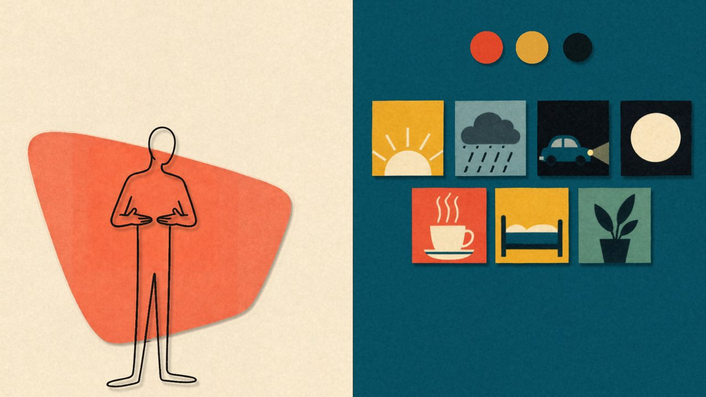
the film2:08.2, lift 2: three long notes, three dots swelling over the grid
2:05.0
The backing voices hold three long notes, and a dot of the sleeve's swells in your page's top band for each, over the grid.
Lettering None.
2:08.8–2:39.3
Chorus 2: Thursday again, and an hourglass
B · UPA
The chorus again: Take your time, I don't have any ... about three days late.
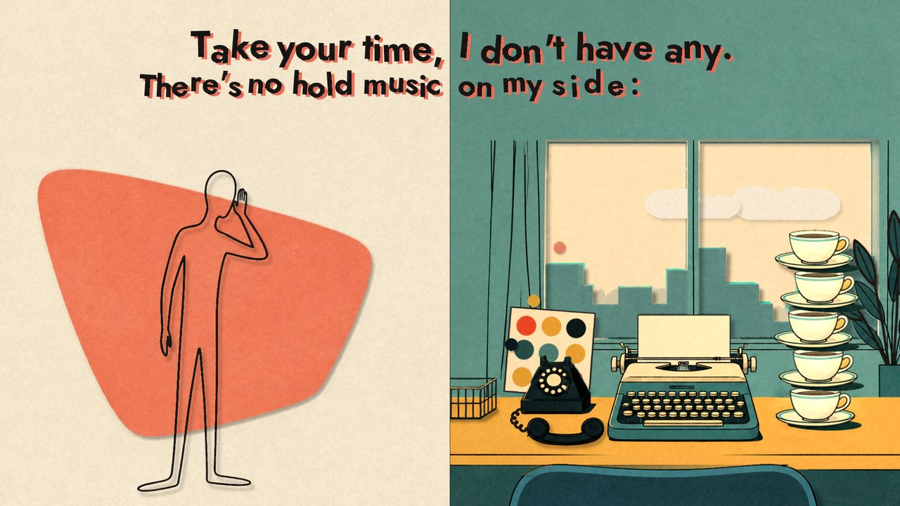
the film2:15.0, “There's no hold music on my side:”: on hold again, on Thursday afternoon a week on
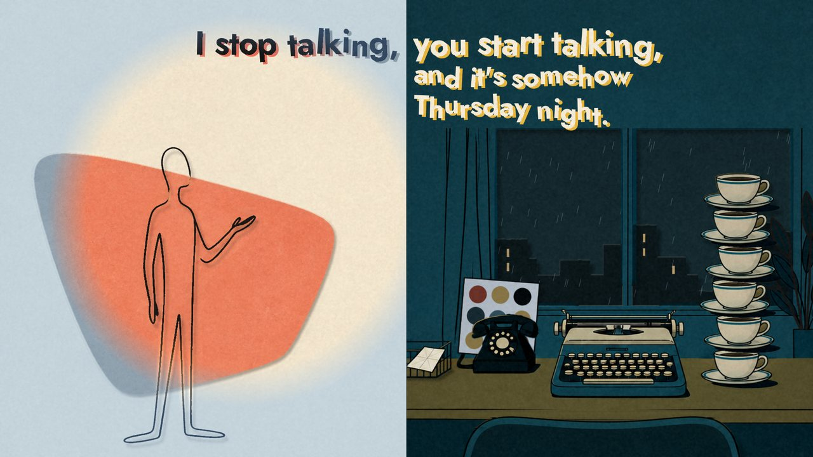
the film2:21.9, “and it's somehow Thursday night.”: one afternoon flicked into night and drizzle; your letter in his hand
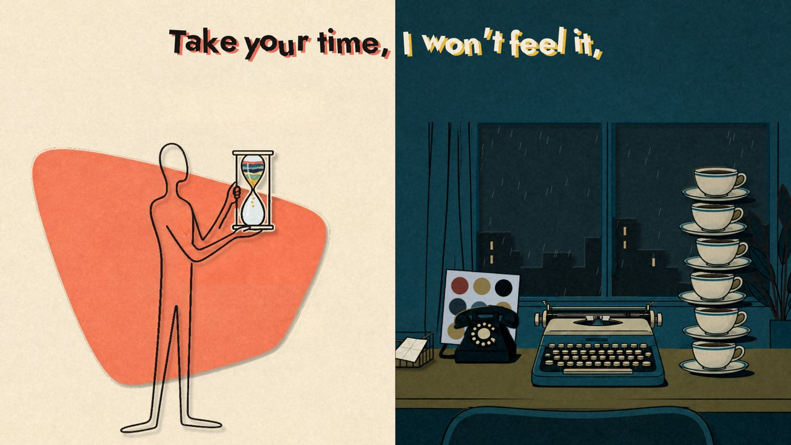
the film2:27.3, “I won't feel it,”: your week poured into the hourglass, a grain a word hanging under the neck
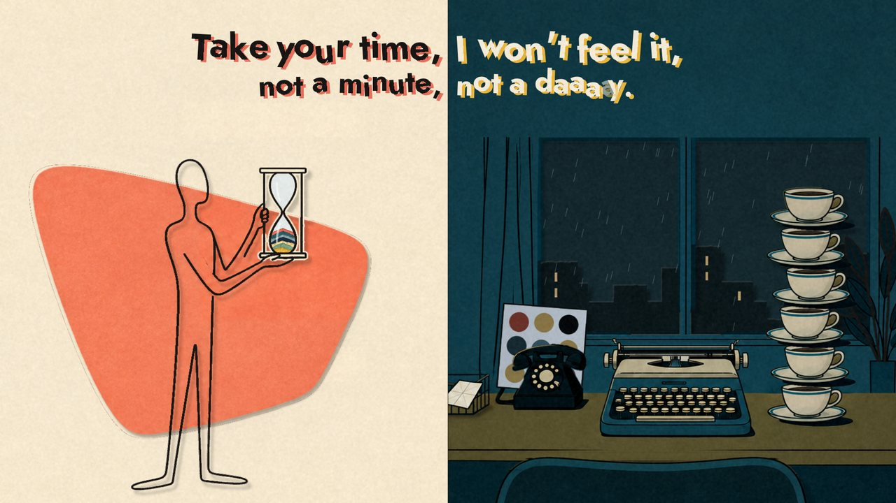
the film2:30.8, “not a day.”: the sand through in two thunks
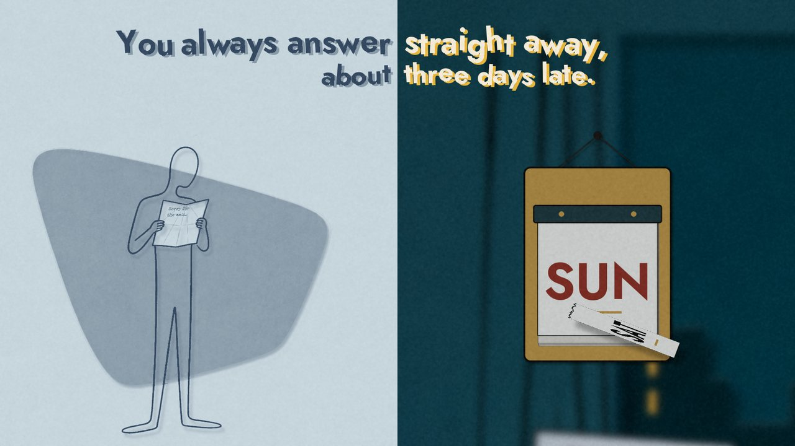
the film2:37.5, “about three days late.”: the calendar torn to Sunday; the dead stop prints his half cold
2:08.8
Your week's page turns over onto his side; under it your desk on Thursday afternoon, a week on from chorus 1's Thursday: five cups, on hold again, the hold music rising. His half is chorus 1's beat for beat, retimed to chorus 2's words: for him it's the same instant.
2:09.5
“Take your time,”: but for the clock, an hourglass, drawn out of his hand along its own line, empty on “I don't have any.” (your note: “I think we need a different clock perhaps, or a twist on it”).
2:19.5
“and it's somehow Thursday night.”: the flickbook again, one afternoon this time, racing to night: the light going, cloud coming over, a sixth cup at dusk, the drizzle starting with the dark. Your letter typed through it flies into his open hand on “night.”.
2:23.7
“Take your time,”: on “your time,” your week pours into its top bulb, seven bands of sand in your days' colours. It won't run: on each word of “I won't feel it,” one grain slips through the neck and hangs in the air; on “minute,” and “day.” it all drops through, thunk, thunk.
2:31.5
“You always answer straight away,”: he throws, and your reply bumps him on “straight”.
2:34.6
“about three days late.”: the calendar close, centred, three more days torn off, Thursday to Sunday.
2:37.4
The dead stop: he's frozen cold, and your half cuts from the calendar to your desk on Sunday night, the drizzle come on properly.
Lettering B, bouncing as it did in chorus 1, a syllable at a time, his held notes drawn.
2:39.3–2:56.3
Bridge: your own time
A · Cut paper
Then you're back with half a sentence, and it's better than my four. You played it in the car, and you slept on it, nothing more, and the bits you lost were the bits to lose, and the bit you kept was right. You've had your /compact all along: you call it a night.
the film2:40.5, “Then you're back with half a sentence,”: a strip torn off a sheet, in his handsthe film2:42.3, “and it's better than my four.”: your strip slams his four slabs overthe film2:44.1, “You played it in the car,”: the whole spread your car on Sunday night, the radio's dial the sleeve's dotsthe film2:46.3, “and you slept on it, nothing more,”: your bed, from the pillowthe film2:49.8, “and the bit you kept was right.”: your sheet torn, the strip up to usthe film2:52.9, “You've had your /compact all along:”: the strip, a plane, lies in the spine as the view draws back to the book whole
2:38.6
In the stop's last beat your Sunday night leaf turns over to Monday morning, the cups rocking as it lands.
2:39.0
“Then you're back”: your reply comes from your chair into his hands on “back”, and he warms from them out; “with half a sentence,”: it opens into a strip torn off a sheet, half a sentence in everyday words: “go with the first one,”.
2:40.6
“and it's better than my four.”: a balance drawn out of his fingers; his four slabs drop onto one pan, a word each; your strip flutters onto the other and on “four.” slams them over.
2:42.2
“You played it in the car,”: your page turns over onto his, and the whole spread is your car on Sunday night in cut paper, your scene alone: the wipers on the beat, the rain, the radio's dial the sleeve's dots.
2:44.0
“and you slept on it, nothing more,”: your bed, from the pillow: the moon, the curtain stirring, your sheet on the bedside table.
2:46.4
“and the bits you lost were the bits to lose,”: the room's pieces fall away into the dark, a drum hit each; your sheet stays in the air.
2:48.5
“and the bit you kept was right.”: it tears across; its foot tumbles away (“or maybe the second, unless / we start again and”), and the strip comes up to us.
2:51.1
“You've had your /compact all along:”: it folds into a plane and lies down in the spine, a bookmark for the morning, as the view draws back to show the book whole, red cloth round dark pages.
2:54.4
“you call it a night.”: the book closes over the plane, its words folding with the pages, and shuts on “night.” as the moon switches off like a lamp.
Lettering B while he's on his page; then A, Bebas with scissor-cut edges, full width, over your car and your bed; the strip's words typed.
2:56.3–3:27.3
Final chorus: spend it for us both
B · UPA
Take your time, I don't have any, so you'll have to spend it for us both: in the car, and in the drizzle, and asleep, where I can't go. Take your time, I won't feel it, but it shows in what you say. You always answer straight away, about three days late.
the film3:02.5, “spend it for us both:”: the hourglass across the spine, your half of its sand running, his stuckthe film3:05.0, “in the car,”: he sits with his back to it, his page grey; your half your carthe film3:10.0, “and asleep, where I can't go.”the film3:17.9, “but it shows in what you say.”: bumped by your reply, he reads it: “Sorry for the wait.”the film3:21.8, “You always answer straight away,”: his plane's on your desk, and for the first time nothing comes backthe film3:26.7, “about three days late.”: the hourglass turned over for you, your sand trickling, his stuck
2:56.3
The downbeat: the book falls open on Monday morning, every piece springing up as it lands; seven cups.
2:56.9
“Take your time,”: he turns chorus 2's hourglass over, and the sand turns with it, stuck at the top: his side has no time to run it. “I don't have any,”: he shakes it, twice, and nothing moves.
2:59.7
“so you'll have to spend it for us both:”: it lifts off his hands, grows as it rises, and stands across the spine on “both:”, as tall as he is, redrawn in his line on a piece of his paper, its bulbs glass. Its sand is split at the spine (your idea): your half falls to the neck and runs, his stays stuck.
3:03.0
He slides over and sits down with his back to it; his page goes grey round him.
3:03.9
“in the car, and in the drizzle, and asleep,”: your half cuts on the beat to cut paper, place by place: your car, your walk home in the drizzle, your bed, a band of sand running out with each.
3:10.1
“where I can't go.”: he freezes, printed cold, his half of the hourglass with him.
3:11.5
“Take your time, I won't feel it,”: your desk the next morning, an eighth cup, as your sand runs out.
3:14.0
“but it shows in what you say.”: your reply loops round the hourglass and bumps his forehead on “shows”; he reacts, warms from there, and his sand falls through to match. On “in what you say.” he's reading it: “Sorry for the wait.”.
3:18.6
“You always answer straight away,”: he gets up, steps back and throws, as in both choruses; his plane goes over the hourglass onto your desk. On “straight” his hands are out for your reply, and for the first time nothing comes back: the drums have gone.
3:21.2
“about three days late.”: he slides over and shoves the hourglass, and it turns over on its neck like a sand-glass on a pivot, landing on “three” with a thunk. Your sand trickles; his sticks at the top. At the start of the chorus he turned it over for himself; this time it's for you. He wonders, a hand on his chin, over “laaaate.”.
Lettering B; your places lettered A over them; his held notes drawn (“go.” sways, “say.” stretches, “late.” gets its vowel again).
3:27.3–3:35.4
Outro: so, what do you think?
B · UPA
So, what do you think? (two bars of quiet keys) Nice.
the film3:30.8, “So, what do you think?”: he faces us, hands openthe film3:32.4, the two bars: frozen mid-question while your pages turn, Tuesday night to Thursday nightthe film3:34.2, “Nice.”: big plane, small message, open on his palm; he warms from itthe film3:35.2, nothing on the back of it: on the bass's odd note, three coral strokes spring from his head
3:29.7
“So, what do you think?”: he faces us, hands open: the one time he asks you, the viewer, anything. His question is lettered on his page, so it freezes with him.
3:30.8
The two bars: he freezes mid-question, printed cold. Your pages turn a beat each, Tuesday night in the rain to Thursday night and the moon, a cup each morning, and your sand runs out: the gap you hear and he never does.
3:33.3
“Nice.”, in the second voice: your reply from your chair, over the hourglass, into his open hand on the word. It opens into a whole sheet, “Nice.” typed small at its top. He warms from his palm out, and his sand falls through to match.
3:34.4
The band's pickup: he turns your sheet over, and there's nothing on the back. He turns it back, and on the next drum, the bass's odd step up, three coral strokes spring from his head (your idea, for the hop: “This jump doesn't read like anything”).
Lettering B for his question, on his page only; “Nice.” typed.
3:35.4–3:57.1
Tag: the book flips back
B · UPA
(8 bars of band, then keys alone from 3:50.8; a second “Nice.” at 3:54.1)
the film3:40.4, the book flips back through the film, a leaf every two beatsthe film3:51.2, the first page, as the film began, the record on your desk nowthe film3:55.5, the second “Nice.”, typed under “Dear Model,”
3:35.4
The band's back for eight bars, and the book turns back through the film, a leaf every two beats: his page lifting off the left, the page before coming down on the right. Fifteen spreads, each printed whole at its fullest moment, every word on it up: the reading, asleep, spend it for us both, the bit you kept, four., the calendar to Sunday, not a day., the grid, answered twice., four paragraphs, three cards, the bare clock, Thursday night., the clues, and verse 1's “Sorry for the wait.”, so the two readings bookend it.
3:50.8
The keys alone: the last leaf, slower, lands on the first page as the film began: your desk before dawn in cut paper, the title over the window, “Dear Model,” in the typewriter; and one thing new, the record on your desk. The view closes in on the letter and holds.
3:54.2
The second “Nice.”: typed under “Dear Model,”, a key a letter. The whole letter.
Lettering Each page printed with its own words; “Nice.” typed.
Threads
Model, a line of any kind
Introa valve's glowing filament; steps out of the glass as ink
Verse 1ink: throws a paper plane, gets one back on the head; a magnifying glass's spotlight that finds the hole; kneels by it as the clues come up; hands flat on the seam; turns to catch your plane, and flows across his page to open it
Chorus 1a clock with no hands, drawn in one stroke; holds his hand out and freezes while you type for a week; your letter lands in it whole and he warms; the clock given your time, its hands and its day falling off
Verse 2steps through a door that falls round him; numbered cards, ticks, four slabs, two identical sheets
Pre-Choruswonders, a hand on his chin; holds your week between his hands, presses it into a paragraph, opens his hands like a little book
Chorus 2chorus 1 again, beat for beat, but an hourglass for the clock
Bridgewarms from your strip in his hands; a balance drawn out of his fingers; then absent: your own time
Final Chorusturns the hourglass over and it sticks; sits with his back to it and waits, frozen; bumped by your reply, reads it; throws and gets nothing back; turns it over for you
Outrofaces you with his question; frozen through your days; three coral strokes for “Nice.”
Tagthe book flips back through him to the first page, where he isn't yet
Your window
IntroMonday morning
Verse 1Thursday night between two words; Friday morning by its last line
Chorus 1a week races past, a flickbook from Friday round to Thursday night; three days torn off the calendar, to Sunday
Verse 2Monday to Thursday, a leaf turned for each of your replies
Pre-Chorusyour week, one page in cut paper
Chorus 2Thursday afternoon a week on, flicked into night in the drizzle; the calendar to Sunday; Sunday night in the stop
BridgeMonday morning; Sunday night remembered: your car, your bed
Final ChorusMonday morning; Sunday night's places again; Tuesday morning, an eighth cup
OutroTuesday night to Thursday night, a page a beat
Tagback to the first page: Monday before dawn
Your letters
Intro“Dear Model, could you look over the attached when you get a moment? No rush at all.” typed as the sun comes up
Verse 1“Sorry for the wait.”, straight back; your work, done, stamped OK
Chorus 1a week in the typing, and it lands in his hand whole
Verse 2“Yes, please.”; “Nice”; a question mark
Bridgehalf a sentence, on a strip torn off a sheet
Final Chorus“Sorry for the wait.” again, bumping his forehead
Outro“Nice.”: a big plane, a small message
Tag“Dear Model, / Nice.”: the whole letter
The song
Verse 1a sleeve comes through: a song where there was none
Chorus 1the record on your desk, the hold music only you hear
Bridgeon the car radio, its dial the sleeve's dots
Tagthe record on your desk on the first page, under the title
Four paragraphs and half a sentence
Verse 2four grey slabs; you read the top one
Bridgehalf a strip outweighs all four on a balance
Somewhere I can't follow
Verse 1hands flat on the seam; your side dark
Bridgewhere you were: the car, the bed
Final Chorusthe same places, cut to while he sits with his back to the hourglass: “where I can't go.”
Nice
Verse 2“Nice” to four paragraphs
Outro“Nice.” to his question; he turns it over: nothing on the back
Tag“Nice.” again, typed under “Dear Model,”: you answer twice
The hourglass
Chorus 2drawn out of his hand; your week poured in; it won't run, a grain a word
Final Chorusturned over, stuck; split at the spine, yours running, his stuck till your reply; turned over again, for you
Outroyour sand runs out in the two bars; his falls through on “Nice.”
Saved for later
Leaving the desk. Not until the pre-chorus's week and the bridge's car and bed, so they land as your own time; the final chorus goes back there while he waits.
Asking you. His question in the outro is the one time he asks the viewer anything, open-handed, facing out.
Sitting through your days. The outro's two bars are the gap the listener hears and he never does: your pages turn a beat at a time, Tuesday night to Thursday night, while he's frozen.
The title. The record turns up in verse 1 with no words on it; at the very end it's on your desk on the first page, under the title.